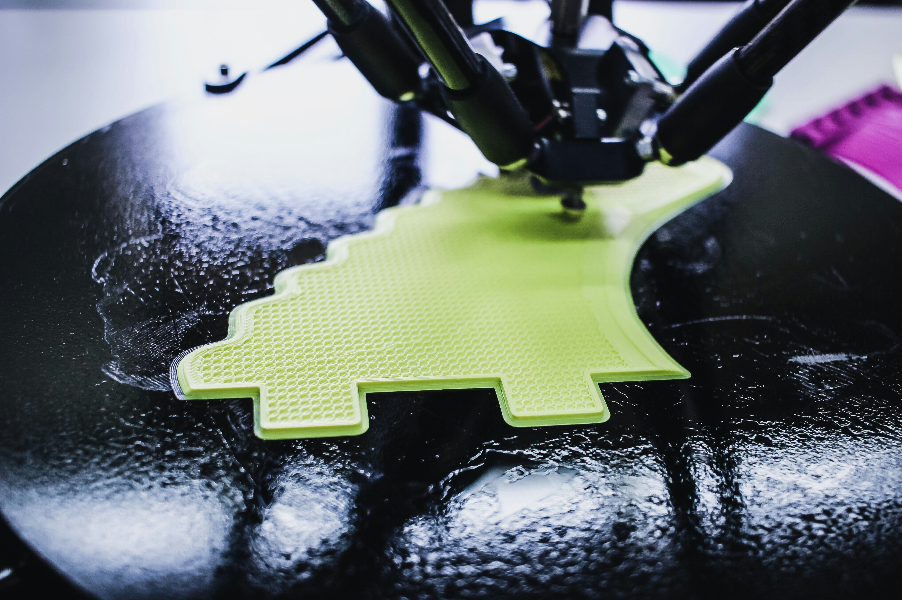
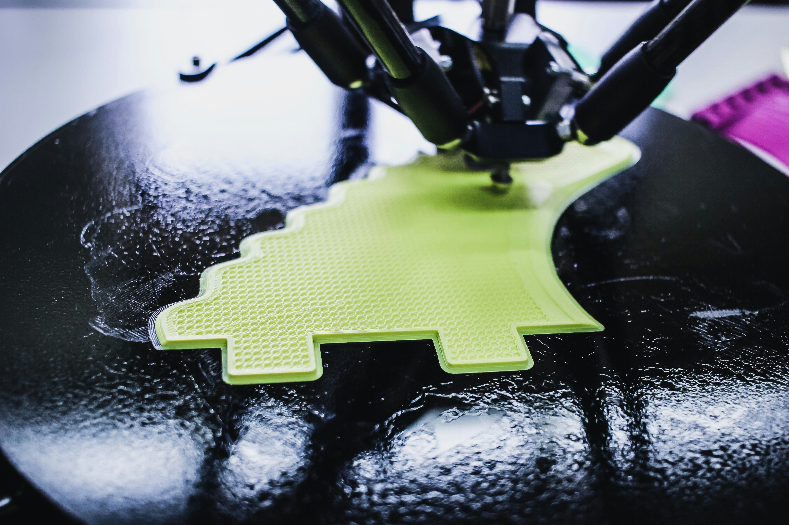
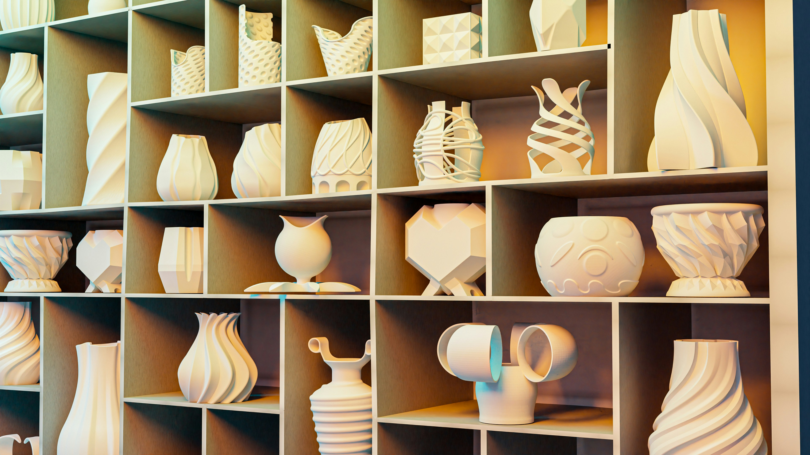
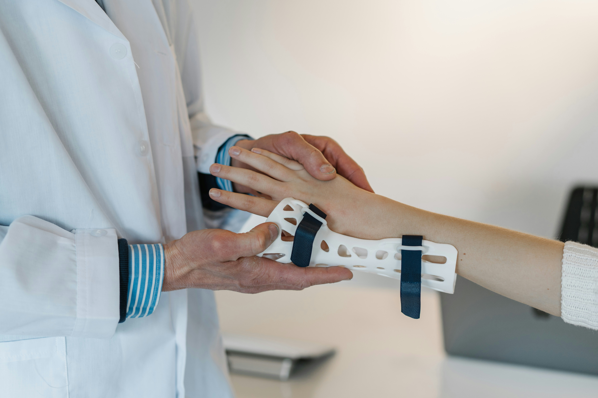
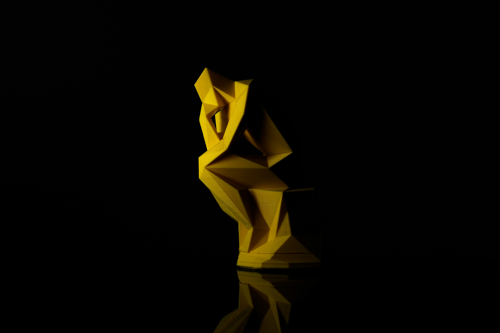
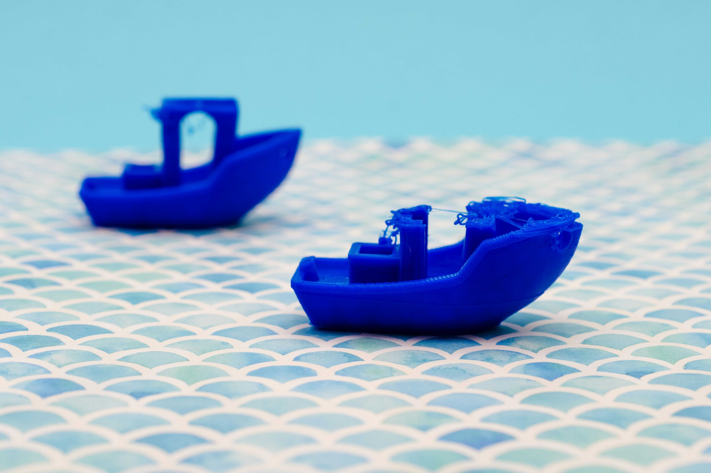
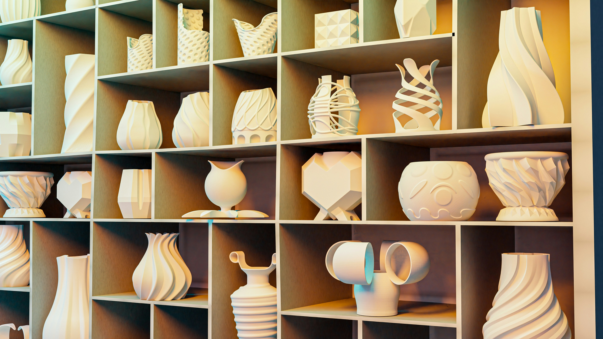
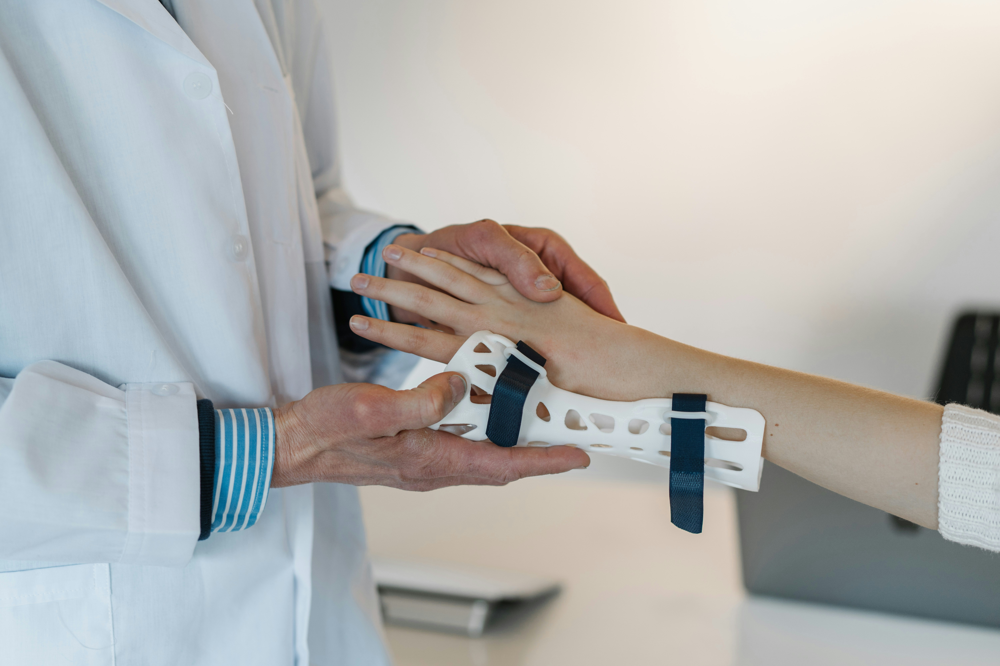
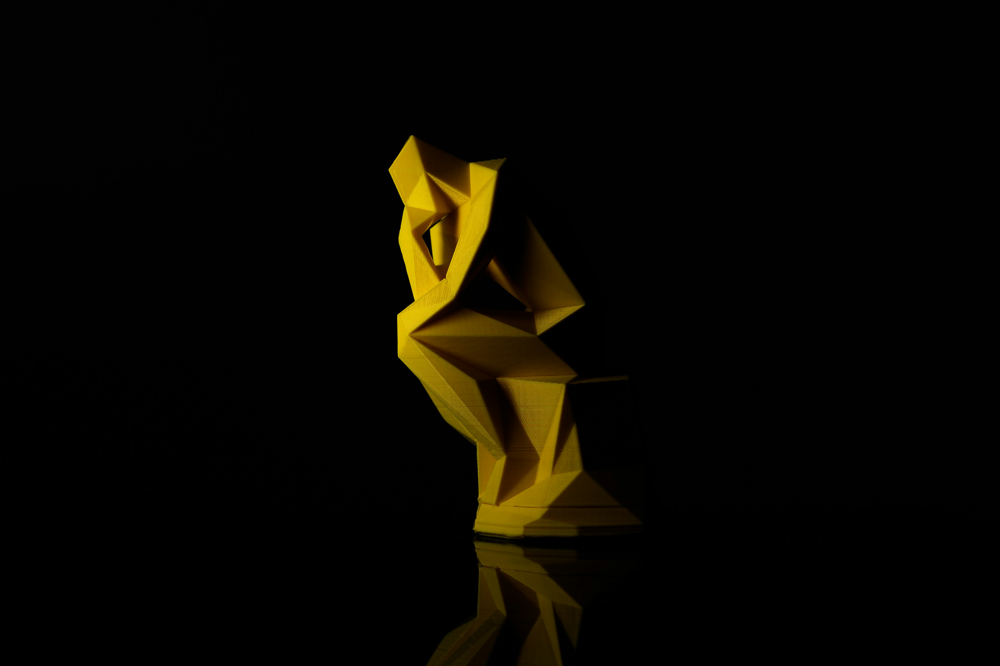
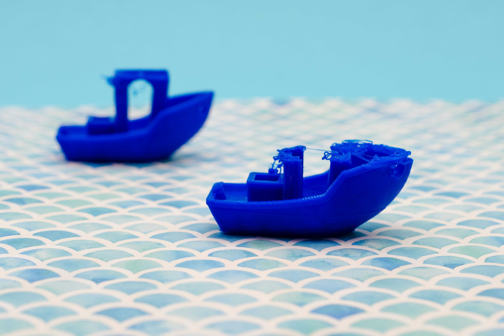

Somos una microempresa la cual utilizando la tecnología del modelado 3D e impresión 3D desarrollamos productos únicos y personalizados de la misma manera que con nuestro conocimiento en Ingeniería damos soluciones a la fabricación de piezas más complicadas que ya no se encuentren en el mercado y para uso mecánico intermedio utilizando materiales como PETG y ABS.
La impresión 3D es un proceso de fabricación aditiva que permite crear objetos físicos tridimensionales a partir de un diseño digital. Se logra mediante la superposición de capas de material, como plástico, metal o cerámica, que se fusionan para formar el objeto deseado.
1. Diseño digital: Se crea un modelo 3D del objeto en un software especializado.
2. Preparación: El modelo se convierte en un formato compatible con la impresora 3D.
3. Impresión: La impresora 3D deposita el material capa por capa, siguiendo las instrucciones del diseño.
4. Fusión: Las capas se fusionan para formar el objeto sólido.
1. Prototipado rápido
3. Creación de modelos a escala
4. Fabricación de prótesis y dispositivos médicos
5. Arquitectura y construcción
6. Diseño de productos y juguetes
1. Flexibilidad y personalización
2. Reducción de costos y tiempo de producción
3. Capacidad para crear geometrías complejas
4. Uso de materiales sostenibles
1. Limitaciones en la calidad de superficie
2. Restricciones en el tamaño de los objetos
3. Costo elevado de las impresoras 3D de alta calidad
4. Necesidad de post-procesamiento y acabado
En resumen, la impresión 3D es una tecnología innovadora que permite crear objetos tridimensionales con gran flexibilidad y personalización.
 

 






